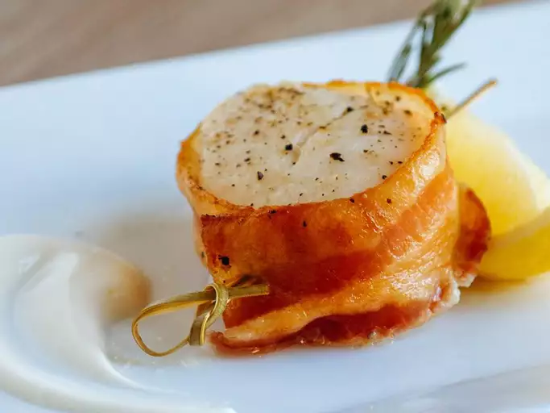

Bacon-Wrapped Scallops

Description
Bacon-wrapped scallops are an easy appetizer to make
and extremely delicious!
Ingredients
- 6 slices bacon
- 12 sea scallops, rinsed and drained
- 3 tablespoons fresh lemon juice
Steps
- Preheat the oven to 350 degrees F (175 degrees C).
- Cut bacon slices in half and wrap each half around a scallop.
Use a toothpick to secure in place.
Drizzle lemon juice over scallops.
Place on a cookie sheet.
- Bake in a preheated oven for 15 to 20 minutes
or until bacon is cooked.
Serve warm.